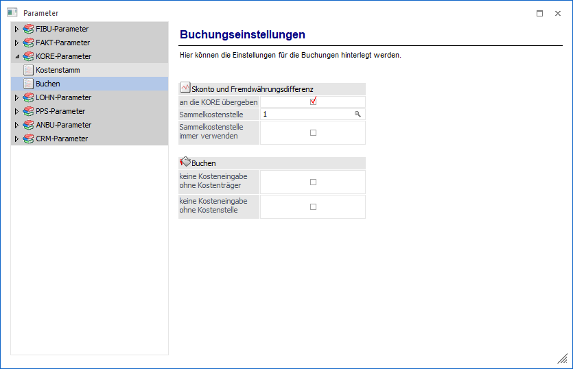
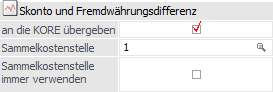
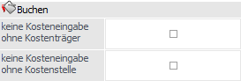

Über den Bereich "KORE-Parameter - Buchen" können Einstellungen für die Buchungen hinterlegt werden.
Hinweis
Standardmäßig wird das Fenster in einem "Lesemodus" geöffnet, d.h. es können die bestehenden Einstellungen kontrolliert, Änderungen allerdings nicht durchgeführt werden. Hierfür muss zunächst mit Hilfe des Buttons "Bearbeiten" der "Bearbeitungsmodus" aktiviert werden. Alternativ kann diese Aktivierung auch über das Kontextmenü der rechten Maustaste (Funktion "Applikation xxx bearbeiten") erfolgen.

Skonto und Fremdwährungsdifferenz

Ø an die KORE übergeben
Hier kann eingestellt werden, ob bei Skonto- und / oder Kursdifferenzbuchungen automatische Kostenrechnungszeilen erzeugt werden sollen oder nicht.
Voraussetzungen
Damit Skontobuchungen und Fremdwährungsdifferenzen automatisch in die WinLine KORE gebucht werden, müssen folgende Voraussetzungen erfüllt werden:
ü In den KORE-Parametern muss die Funktion aktiviert werden und es muss eine Sammelkostenstelle angegeben werden.
ü In den Sachkonten (FW-Differenz- und Skontokonten) muss eine Kostenart hinterlegt werden.
Wird beim Buchen eine Skontobuchung oder eine FW-Differenzen-Buchung abgesetzt, wird aufgrund der bestehenden OP-Informationen die WinLine KORE mitgebucht - die Beträge werden entsprechend der OP-Information aliquotiert.
Ø Sammelkostenstelle
Hier kann eine Sammelkostenstelle hinterlegt werden, die im Falle eines Fehlers (wenn die Faktura z.B. nicht mehr vorhanden ist, da das Kore-Journal bereits gelöscht wurde) verwendet wird. Durch Drücken der F9-Tasste kann nach allen vorhandenen Kostenstellen gesucht werden.
Ø Sammelkostenstelle immer verwenden
Wird diese Option aktiviert, so wird bei der Übergabe des Skontos (und der FW-Differenzen) in die KORE immer fix die eingestellte Sammelkostenstelle verwendet.
Buchen

Ø keine Kosteneingabe ohne Kostenträger
Wenn diese Option aktiviert ist und zusätzlich in den Fakt-Parametern die Checkbox "Kostenstelle und Kostenträger prüfen" aktiviert ist, muss in der Belegzeile zwingend ein Kostenträger eingegeben werden, wenn beim Erlöskonto eine Kostenart (keine Gemeinkostenart) hinterlegt ist und eine Kostenstelle vorhanden ist.
Des Weiteren ist es nicht möglich, bei aktiver Checkbox einen Buchungsstapel zu verbuchen, in dem KORE-Zeilen ohne Kostenträger vorhanden sind. Beim Erfassen einer Buchungszeile wird bereits ein entsprechender Hinweis gegeben, dass in einer KORE-Zeile ein Kostenträger eingegeben werden muss.
Der Import eines Buchungsstapels mit KORE-Zeilen ohne Kostenträger über den Menüpunkt "Buchungsstapel-EXIM" ist ohne Fehlermeldung durchzuführen, jedoch beim Versuch ihn sofort zu verbuchen, erfolgt ein entsprechender Hinweis und der Stapel wird nur gespeichert und nicht verbucht.
Ø keine Kosteneingabe ohne Kostenstelle
Wenn diese Option aktiviert ist, ist es nicht möglich, einen Buchungsstapel zu verbuchen, in dem KORE-Zeilen ohne Kostenstellen vorhanden sind (ausgenommen sind Buchungsstapel aus der Fakturierung - diese Buchungen werden so übergeben, wie sie in der Fakturierung hinterlegt wurden). Beim Erfassen einer Buchungszeile wird bereits ein entsprechender Hinweis gegeben, dass in einer KORE-Zeile eine Kostenstelle eingegeben werden muss.